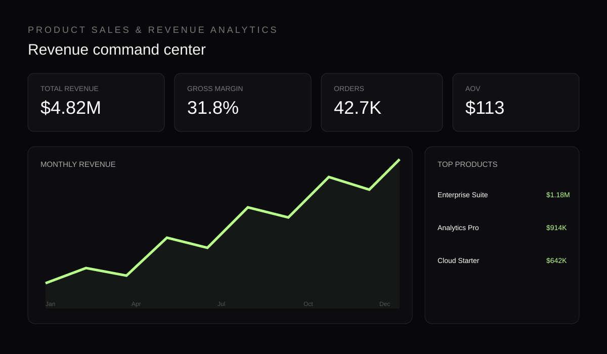

← All projectsProduct Sales &
03 / SALES
Product Sales &
Revenue Analytics.
Interactive analytics for revenue trends, product performance, profitability and KPI movement.

The work
Make revenue movement obvious.
The solution brings revenue, orders, margin and product performance into one analytical view so users can move from headline KPIs to product-level questions.
RevenueTop-line trend
MarginProfitability
AOVOrder value
Decision view
What sells?
What grows?
What pays?
The dashboard emphasizes trend visibility, product ranking and KPI context so business users can quickly identify performance changes and investigate the drivers behind them.